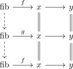

map to fiber is unique up to automorphism
Proposition
Let $\mathcal{C}$ be a pointed category and $f: x \rightarrow y$ a map. Then the map
\begin{align*}
\mathrm{fib} \rightarrow x
\end{align*}
is unique up to automorphism - which is uniquely determined after choosing witnesses of commutativity ?
Proof
Let $\mathrm{fib} \xrightarrow{f} x, \mathrm{fib} \xrightarrow{g} x$ be two different choices of maps which are the fiber Then

which can be obtained by suitable left kan extension/right kan extension.
I'm not sure what I'm doing - this may be trivial and I'm just confused :/